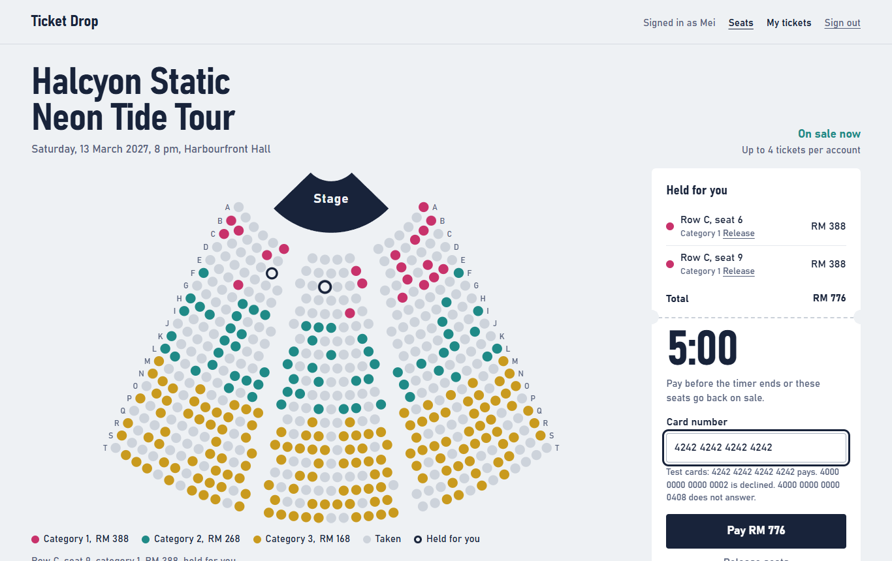
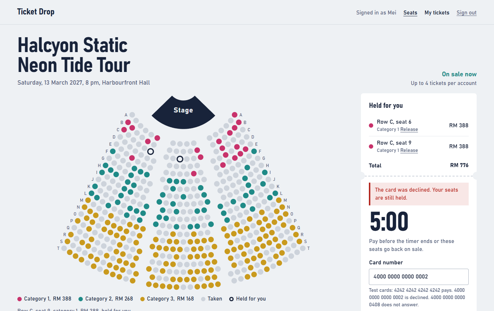
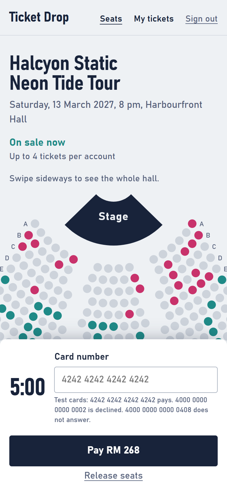

Fifty fans pressed the same seat at the same instant. One got it.
Ticket Drop is a small concert ticket sale, built to answer one question with evidence: when everyone presses Buy at once, can a seat be sold twice, can seats vanish after a declined card, can someone pay without getting tickets?

How it was tested
The application is small on purpose. Each part of the testing answers a different question, and each result is saved in the repository.


Ten planted bugs, three ways to look for them
A passing suite only says the app did what the tests checked. To measure whether the tests notice bugs, a separate agent planted ten realistic ones, reading only the requirements and the application code. Each was then switched on alone.
| Planted bug | Test suite | Random explorer | Local AI explorer (llama3.2) |
|---|---|---|---|
| Two fans clicking one seat at the same instant could both be told they hold it | caught | 1 of 3 runs | 1 of 3 runs |
| A fan who already bought four tickets could hold four more | caught | 0 of 3 runs | 0 of 3 runs |
| At the exact second a hold ends, its seats stayed blocked | caught | 0 of 3 runs | 0 of 3 runs |
| After a payment timeout, the fan's seats were stuck for ever | caught | 0 of 3 runs | 0 of 3 runs |
| Retrying a declined payment with the same key charged the card | caught | 0 of 3 runs | 0 of 3 runs |
| The browser could choose the price | caught | 0 of 3 runs | 0 of 3 runs |
| A fan could release a seat held by someone else | caught | 0 of 3 runs | 0 of 3 runs |
| Signing in again reset the rate limit | missed | 0 of 3 runs | 0 of 3 runs |
| After a failed click the seat map stayed wrong for a few seconds | missed | 0 of 3 runs | 0 of 3 runs |
| Releasing all seats closed the hold but never freed the seats | caught | 1 of 3 runs | 0 of 3 runs |
The two bugs the suite missed were then covered by one new test and one tightened assertion; both are now caught.
Read the code and the evidence
The repository holds the application, every test, the saved results, a test plan, and a defect log that includes a first guess measurement proved wrong.